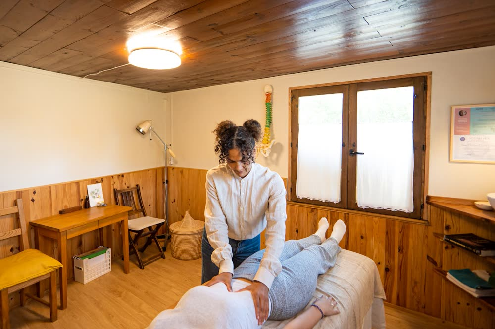
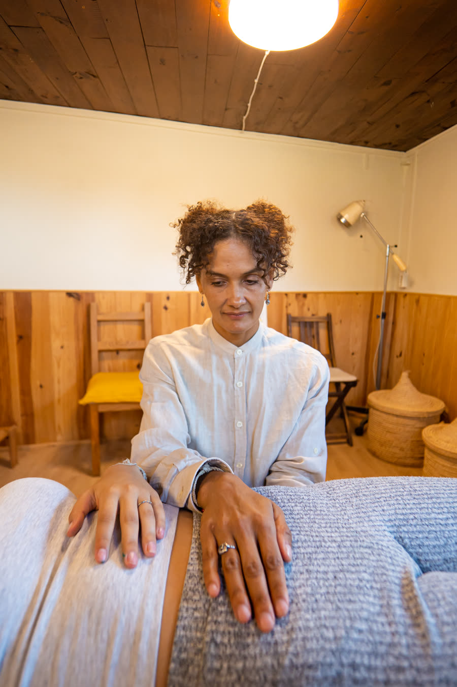
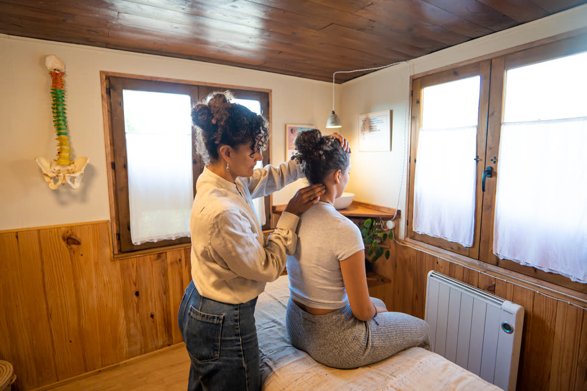
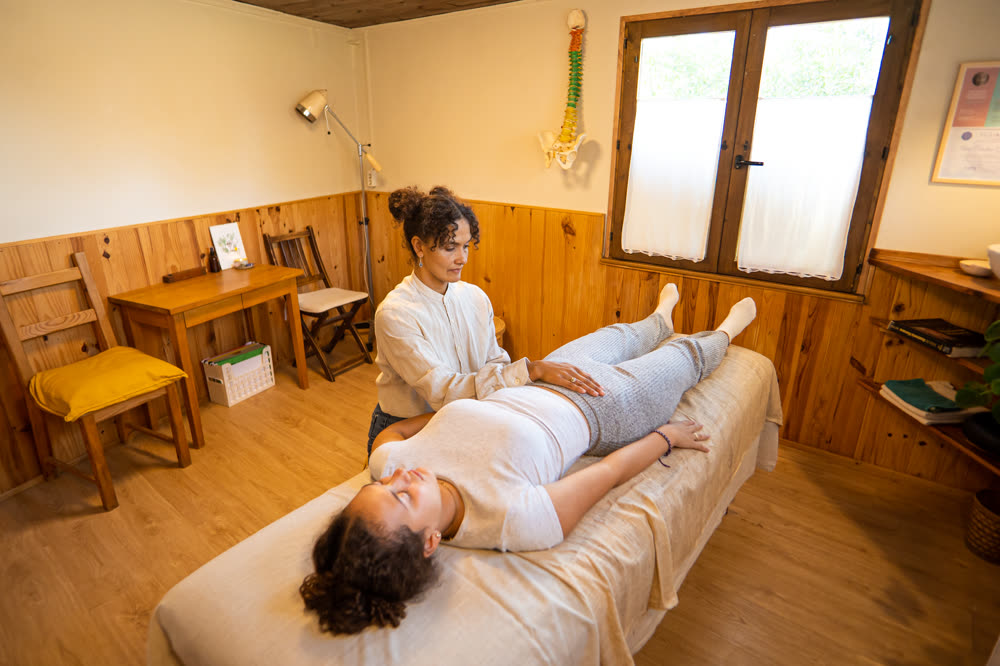
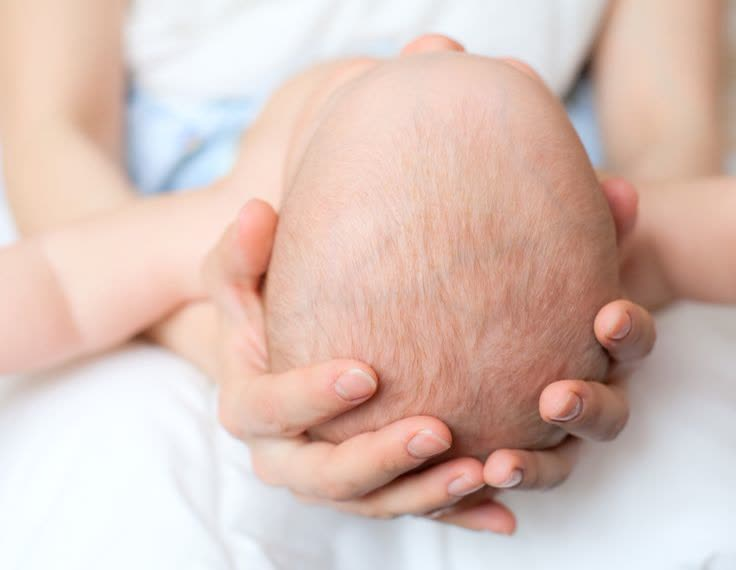
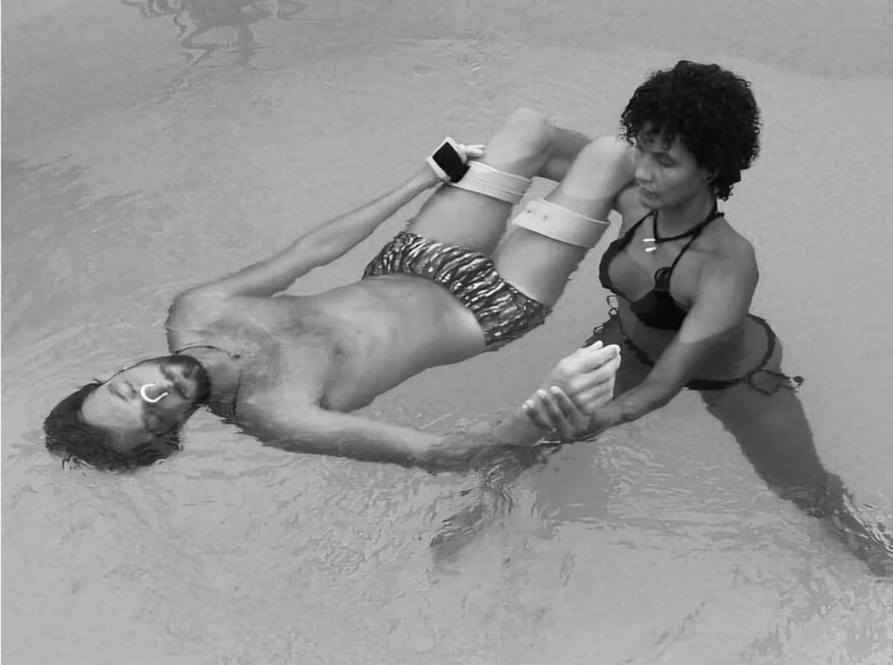
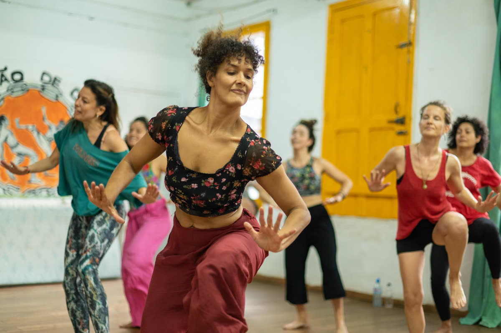
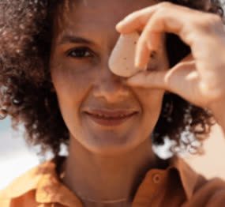
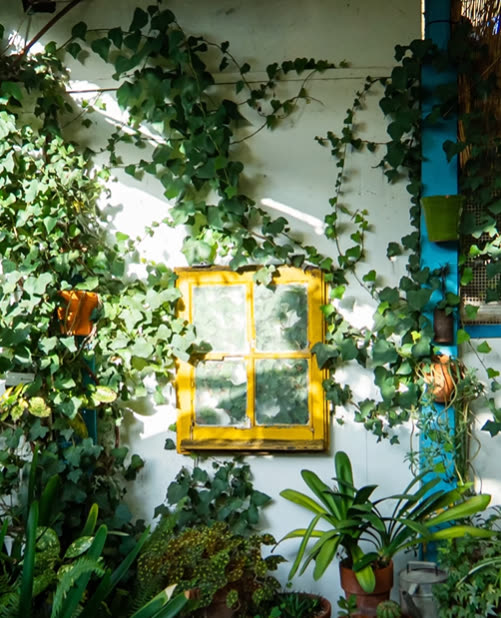

Estructural
Trabaja en profundidad huesos, músculos, ligamentos y tejido conectivo. Ajusta, estira y relaja articulaciones y tejido blando.
Osteopatía estructural, craneosacral y visceral para tratar tu salud de forma integral: el síntoma y también la causa. En una consulta tranquila, dentro del Parque de Collserola.

Es una medicina manual y holística que toma el cuerpo como un todo. Parte de que todos los sistemas están relacionados: busca qué genera el problema y le da solución, al síntoma y a la causa.
“A través de la osteopatía te escucho y te veo con las manos, te acompaño a que recuperes tu salud y caminemos juntos hacia tu bienestar.”Ana Carolina

Trabaja en profundidad huesos, músculos, ligamentos y tejido conectivo. Ajusta, estira y relaja articulaciones y tejido blando.

Movimientos muy lentos, casi imperceptibles, sobre el cráneo y el sacro para acompañar y liberar tensiones y resistencias.

Órganos y vísceras tienen su propio movimiento. Aquí también hablan las emociones: lo que no digiero, lo que me preocupa.
Me cuentas cómo estás y el motivo de tu consulta, te escucho y tomo notas. Después, un diálogo entre mis manos y tus tejidos.
El cuerpo necesita tiempo para sanar. Un tratamiento suele ser de varias sesiones, cada tres o cuatro semanas.
Aquí no estás en la camilla de forma pasiva: trabajamos juntos, con pequeños gestos, para ganar amplitud, fuerza y escucha.
Sutil, suave e indolora, respetando siempre su ser, su historia y su entorno familiar. Desde el nacimiento hasta la pubertad.
Masaje terapéutico en el agua: relajación profunda, flotando, para soltar tensiones de la columna y las articulaciones.

Desde el nacimiento, el cráneo y el cuerpo del bebé se adaptan a muchas tensiones, empezando por el parto, y a veces dejan huella en el tejido.
La osteopatía ayuda a aliviarlas y a recuperar el equilibrio, para que crezca con bienestar y salud.
En el agua disfrutamos de su fluir y nos sentimos acogidos. Esa ingravidez nos conecta con las emociones y con lo que somos: más de un 70 % de agua.
Trabaja a nivel físico, mental, emocional y energético, y actúa sobre la circulación, el sistema linfático y el sistema nervioso.
Reservar sesión

Bailes tradicionales y modernos de África y de los países latinos con raíz africana: Cuba, Colombia, Brasil, Perú… Grupos en La Floresta y Barcelona, también para peques.
Pregúntame los horarios“Me siento muy liberada, sobre todo en la espalda, la caja torácica y el cuello: más fluida y sin dolor. Y también más confiada y tranquila.”
Saskia“Me trata cada dos o tres meses y no podría sin sus sesiones. Su escucha profunda y profesional es difícil de encontrar en otros osteópatas.”
Dana“Su forma de acompañar mi proceso me da plena confianza. Carolina aporta mucho a mi salud y estoy encantada de haberla encontrado.”
Esther
Me llamo Ana Carolina. Además de osteópata soy bailarina, profesora de danza, facilitadora de AguaHara y quiromasajista. Trabajo con el cuerpo y la conciencia corporal desde niña, y me sigue fascinando entenderlo.
Mi consulta está en el Curious Garden, un espacio terapéutico y cultural dentro del Parque de Collserola, muy cerca de Barcelona y bien comunicado en tren.
